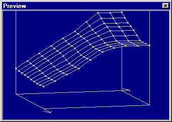
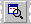

|
The dialog Preview (Menu Window) |

  
|
|
The dialog Preview (Menu Window) |
|

This dialog shows a 3d preview of the data you are currently working on. A preview is shown
a) When you’re creating a rectangular, consecutive selection
b) When you’re selecting a map in the map selection window
c) When you’re editing a map that is not shown in 3d mode
This dialog is not modal, meaning that windows lying behind the window may still be used.
The size of the dialog may be configured. You may use the mouse to change the perspective and angle of the preview by dragging the base corners of the cube.
The size of the dialog may be configured. It can be docked to the sides of the main window. This dialog is not modal, meaning that windows lying behind the window may still be used. This dialog is a "floating" dialog. All floating dialogs can be toggled with the tab key.
Shortcuts
Symbol bar: 
Keyboard: P